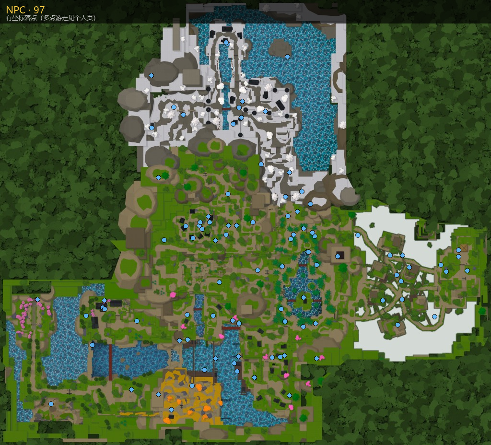

NPC
Regions 配置共 122 名；每人独立介绍页（地点图 · 功能 · 对话 · 任务 / 商店）。 游走型如 Muzan 标出全部刷新点。
专项：锻造 Togane · V2/V3 升阶 · 精炼 · 黑商 · 钓鱼

主页 / NPC
Regions 配置共 122 名；每人独立介绍页（地点图 · 功能 · 对话 · 任务 / 商店）。 游走型如 Muzan 标出全部刷新点。
专项：锻造 Togane · V2/V3 升阶 · 精炼 · 黑商 · 钓鱼

| # | 名称 | 区域 | 坐标 | 作用 | 任务数 |
|---|---|---|---|---|---|
| 1 | Bear Cub | 竹林 | — | 对话 / 氛围 | — |
| 2 | Betty | 竹林 | 714, 1121, -808 | 任务 | 1 |
| 3 | Chaka | 竹林 | 471, 1146, -1260 | 任务 | 2 |
| 4 | Hoyuzo | 竹林 | 747, 1001, -1413 | 对话 / 氛围 | — |
| 5 | Hoyuzo Subordinate | 竹林 | — | 对话 / 氛围 | — |
| 6 | Kaiden | 竹林 | 586, 1147, -1315 | 对话 / 氛围 | — |
| 7 | Kaiden Subordinate | 竹林 | — | 对话 / 氛围 | — |
| 8 | Kuro | 竹林 | 667, 1121, -1101 | 商店 | — |
| 9 | Liv | 竹林 | 657, 1019, 140 | 任务 | 2 |
| 10 | Mother Bear | 竹林 | 540, 1121, -1024 | 对话 / 氛围 | — |
| 11 | Tom | 竹林 | 507, 1121, -970 | 任务 | 2 |
| 12 | Wagwan | 竹林 | 724, 1019, -802 | 任务 | 2 |
| 13 | Demon Slayer Goro | 蝴蝶庄园 | -872, 235, 318 | 任务 | 2 |
| 14 | Greater Demon | 蝴蝶庄园 | — | 对话 / 氛围 | — |
| 15 | Lesser Demon | 蝴蝶庄园 | — | 对话 / 氛围 | — |
| 16 | Ren | 蝴蝶庄园 | -1795, 312, -85 · 10点 | 商店 / 任务 | 1 |
| 17 | Shiori | 蝴蝶庄园 | -1814, 312, -101 | 任务 | 2 |
| 18 | Demon Mokuro | Final Selection Plains | -1948, 28, 374 | 任务 | 1 |
| 19 | Fujiko | Final Selection Plains | -2460, 38, 1119 | 对话 / 氛围 | — |
| 20 | Mizunoe Demon Slayer | Final Selection Plains | — | 对话 / 氛围 | — |
| 21 | UbuSister1 | Final Selection Plains | -2630, 284, -203 | 对话 / 氛围 | — |
| 22 | UbuSister2 | Final Selection Plains | -2622, 284, -203 | 对话 / 氛围 | — |
| 23 | Baitmonger Nori | 隐雾村 | 1643, 670, -190 | 商店 | — |
| 24 | Blacksmith Togane | 隐雾村 | 1732, 694, -765 | 锻造 / 任务 | 1 |
| 25 | Refiner Hagane | 隐雾村 | 1865, 694, -434 | 精炼 | — |
| 26 | Stonemason Tobei | 隐雾村 | 1876, 659, -206 | 对话 / 氛围 | — |
| 27 | Yagane | 隐雾村 | 1814, 659, -516 | 锻造 | — |
| 28 | Chest Mounds | Iceveil Valley | — | 对话 / 氛围 | — |
| 29 | Demon Delroy | Iceveil Valley | 140, 1254, -1911 | 任务 | 1 |
| 30 | Demon Slayer Mitsu | Iceveil Valley | -824, 1382, -2538 | 任务 | 2 |
| 31 | Fire Profound Demon | Iceveil Valley | — | 对话 / 氛围 | — |
| 32 | Foxfire | Iceveil Valley | — | 对话 / 氛围 | — |
| 33 | High Demon | Iceveil Valley | — | 对话 / 氛围 | — |
| 34 | Ice Profound Demon | Iceveil Valley | — | 对话 / 氛围 | — |
| 35 | Iceveil Guard Shiro | Iceveil Valley | -107, 1349, -2499 | 任务 | 2 |
| 36 | Kanoe Demon Slayer | Iceveil Valley | — | 对话 / 氛围 | — |
| 37 | Old Trapper Retsu | Iceveil Valley | 440, 1177, -1504 | 对话 / 氛围 | — |
| 38 | Shrine Messenger Akio | Iceveil Valley | -207, 1350, -2423 | 任务 | 2 |
| 39 | Winter Store Rep Lynx | Iceveil Valley | -92, 1353, -2706 | 商店 | — |
| 40 | Wounded Slayer Tomoi | Iceveil Valley | 485, 1223, -1813 | 任务 | 1 |
| 41 | Akazo | 杂项 / 全域 | -1132, 1381, -1747 | 对话 / 氛围 | — |
| 42 | Black Marketer | 杂项 / 全域 | -133, 804, 101 · 11点 | 商店 / 限时摊 / 黑商 | — |
| 43 | Boss Hunts | 杂项 / 全域 | — | 对话 / 氛围 | — |
| 44 | Datai | 杂项 / 全域 | -166, 1043, -1138 | 对话 / 氛围 | — |
| 45 | Domae | 杂项 / 全域 | -296, 1350, -3451 | 对话 / 氛围 | — |
| 46 | Duelist Hibiki | 杂项 / 全域 | -1234, 1427, -4593 | 对话 / 氛围 | — |
| 47 | Enru | 杂项 / 全域 | 822, 800, 544 | 对话 / 氛围 | — |
| 48 | Flame Trainee | 杂项 / 全域 | -1129, 1029, 994 | 对话 / 氛围 | — |
| 49 | Flame Trainer Rengu | 杂项 / 全域 | -968, 1029, 1188 | 导师 / 任务 | 1 |
| 50 | Giyen | 杂项 / 全域 | 389, 1018, -85 | 对话 / 氛围 | — |
| 51 | Gyorei | 杂项 / 全域 | 2575, 1089, -742 | 对话 / 氛围 | — |
| 52 | Gyutai | 杂项 / 全域 | -266, 1043, -1140 | 对话 / 氛围 | — |
| 53 | Harvester of Souls Zurinyz | 杂项 / 全域 | -1213, 1387, -2372 | 任务 | 1 |
| 54 | Horse | 杂项 / 全域 | — | 对话 / 氛围 | — |
| 55 | Insect Trainee | 杂项 / 全域 | -1396, 262, 69 | 对话 / 氛围 | — |
| 56 | Insect Trainer Shinora | 杂项 / 全域 | -1799, 348, -189 | 导师 / 任务 | 1 |
| 57 | Lamplighter Isamu | 杂项 / 全域 | 1082, 1426, -749 | 任务 | 1 |
| 58 | Muzan | 杂项 / 全域 | 55, 826, 782 · 89点 | 成鬼 / 游走 | — |
| 59 | Nezura | 杂项 / 全域 | -1460, 276, 936 | 对话 / 氛围 | — |
| 60 | Obari | 杂项 / 全域 | 771, 1121, -1047 | 对话 / 氛围 | — |
| 61 | Reaper | 杂项 / 全域 | 98, 1043, -574 | 对话 / 氛围 | — |
| 62 | Reaper Trainee Kuzan | 杂项 / 全域 | -1219, 1374, -3034 | 对话 / 氛围 | — |
| 63 | Rengu | 杂项 / 全域 | -713, 965, 884 | 对话 / 氛围 | — |
| 64 | Saneri | 杂项 / 全域 | -379, 1094, -422 | 对话 / 氛围 | — |
| 65 | Sealed Chest T1 | 杂项 / 全域 | 802, 1122, -1003 · 8点 | 封印箱点 | — |
| 66 | Sealed Chest T2 | 杂项 / 全域 | -2027, 278, 0 · 12点 | 封印箱点 | — |
| 67 | Sealed Chest T3 | 杂项 / 全域 | 643, 1221, -1567 · 12点 | 封印箱点 | — |
| 68 | Serpent Box | 杂项 / 全域 | — | 对话 / 氛围 | — |
| 69 | Serpent Trainee | 杂项 / 全域 | -271, 1292, -1536 | 对话 / 氛围 | — |
| 70 | Serpent Trainer Obari | 杂项 / 全域 | 37, 1311, -1180 | 导师 / 任务 | 1 |
| 71 | Shinora | 杂项 / 全域 | -453, 964, 2 | 对话 / 氛围 | — |
| 72 | Soryu Expert Kazuma | 杂项 / 全域 | -769, 909, 303 | 导师 / 任务 | 1 |
| 73 | Soryu Trainee Goki | 杂项 / 全域 | -427, 289, 543 | 对话 / 氛围 | — |
| 74 | Sound Trainee | 杂项 / 全域 | 192, 1349, -2581 | 对话 / 氛围 | — |
| 75 | Sound Trainer Tengai | 杂项 / 全域 | 465, 1491, -3273 | 导师 / 任务 | 1 |
| 76 | Stone Trainee | 杂项 / 全域 | 2685, 1074, -569 | 对话 / 氛围 | — |
| 77 | Stone Trainer Gyorei | 杂项 / 全域 | 2579, 1096, -828 | 导师 / 任务 | 1 |
| 78 | Study Props | 杂项 / 全域 | — | 对话 / 氛围 | — |
| 79 | Sumari | 杂项 / 全域 | 396, 1018, -620 | 对话 / 氛围 | — |
| 80 | Tai Chi Expert Renjiro | 杂项 / 全域 | 1883, 687, -761 | 导师 / 任务 | 1 |
| 81 | Tai Chi Trainee Suzume | 杂项 / 全域 | 2360, 602, -642 | 对话 / 氛围 | — |
| 82 | Tailor Omi | 杂项 / 全域 | 1827, 1616, 120 | 对话 / 氛围 | — |
| 83 | Tengai | 杂项 / 全域 | -134, 1349, -2631 | 对话 / 氛围 | — |
| 84 | Thunder Trainee | 杂项 / 全域 | 2426, 1074, -557 | 对话 / 氛围 | — |
| 85 | Thunder Trainer Zentaro | 杂项 / 全域 | 1970, 1660, -610 | 导师 / 任务 | 1 |
| 86 | Water Trainee Sabito | 杂项 / 全域 | 815, 1019, 102 | 对话 / 氛围 | — |
| 87 | Water Trainer Urokodaki | 杂项 / 全域 | 667, 1023, -228 | 导师 / 任务 | 1 |
| 88 | Weaver Hatsu | 杂项 / 全域 | 2281, 813, 15 | 对话 / 氛围 | — |
| 89 | Wind Trainee | 杂项 / 全域 | -942, 1381, -2636 | 对话 / 氛围 | — |
| 90 | Wind Trainer Saneri | 杂项 / 全域 | -276, 1187, -3437 | 导师 / 任务 | 1 |
| 91 | Yahari | 杂项 / 全域 | 826, 1019, -641 | 对话 / 氛围 | — |
| 92 | Yeti Summon | 杂项 / 全域 | — | 对话 / 氛围 | — |
| 93 | Zentaro | 杂项 / 全域 | 1332, 822, -1018 | 对话 / 氛围 | — |
| 94 | Alchemist Meku | 迷雾港 | -138, 801, 519 | 商店 | — |
| 95 | Angler Runo | 迷雾港 | -561, 796, 684 | 任务 | 2 |
| 96 | Beast Born Demon | 迷雾港 | — | 对话 / 氛围 | — |
| 97 | Blood Hounded Demon | 迷雾港 | — | 对话 / 氛围 | — |
| 98 | Civilian | 迷雾港 | — | 对话 / 氛围 | — |
| 99 | Dock Master Sofen | 迷雾港 | -161, 796, 703 | 钓鱼许可 / 任务 | 1 |
| 100 | Drowned Line | 迷雾港 | — | 对话 / 氛围 | — |
| 101 | Elara | 迷雾港 | 428, 941, 507 | 商店 | — |
| 102 | Estate Worker Niko | 迷雾港 | 374, 942, 523 · 15点 | 任务 | 1 |
| 103 | Fisherman Jeso | 迷雾港 | -192, 807, 603 | 商店 | — |
| 104 | Ginzo | 迷雾港 | 274, 942, 528 | 商店 / 任务 | 1 |
| 105 | Jugg | 迷雾港 | 488, 874, 1008 | 任务 | 1 |
| 106 | Legendary Fisherman Isao | 迷雾港 | -215, 797, 61 | 对话 / 氛围 | — |
| 107 | Mizunoto | 迷雾港 | — | 对话 / 氛围 | — |
| 108 | Rin | 迷雾港 | 432, 1018, 73 | 任务 | 1 |
| 109 | Shady Individual Rooyi | 迷雾港 | -773, 965, -9 | 任务 | 1 |
| 110 | *Civilian* | 风之峰 | — | 对话 / 氛围 | — |
| 111 | Bandit | 风之峰 | — | 对话 / 氛围 | — |
| 112 | Civilian | 风之峰 | — | 对话 / 氛围 | — |
| 113 | Kazu | 风之峰 | -626, 1242, -1138 | 任务 | 2 |
| 114 | Kona | 风之峰 | -792, 1260, -1131 | 任务 | 1 |
| 115 | Krue | 风之峰 | -425, 1244, -952 | 任务 | 2 |
| 116 | Lucy | 风之峰 | -615, 1258, -1177 | 任务 | 1 |
| 117 | MoldySugar | 风之峰 | -702, 1243, -983 | 任务 | 1 |
| 118 | Noote | 风之峰 | -516, 1243, -1251 | 任务 | 1 |
| 119 | Raze | 风之峰 | -594, 1242, -1095 | 商店 | — |
| 120 | Rika | 风之峰 | -496, 1249, -1177 | 商店 | — |
| 121 | Wagasa Maker Genzo | 风之峰 | -1059, 1226, -956 | 对话 / 氛围 | — |
| 122 | Zuko | 风之峰 | -297, 1224, -1022 | 对话 / 氛围 | — |